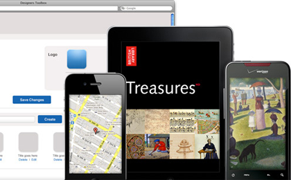
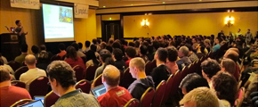

We build custom web and mobile applications. We typically work for funded startup companies and existing businesses.
If you haven't yet built your application, we work with you through all phases of the software development process - from formulating the idea through to deploying it to production servers. Because all projects have a budget we constantly work with you to identify the highest-priority features.
If you already have a production application, we can help you maintain it, add new features or modify it to allow it to scale for a larger audience.
Process & Tools
Scoping Meeting
I make it sound like the goal of the scoping meeting is to serve our purposes (give us a couple months of work) as opposed to phrasing this to the client's advantage somehow.
The goal of a scoping meeting is to build a pipeline of several weeks to months worth of work for our team. Before the scoping meeting you'll have sent us a number of high-level features you want incorporated into your product. After the scoping meeting we’ll deliver a set of user stories that will be added to your project's queue of stories to be developed.
After the scoping meeting we can jump headfirst into design and development or you can use the results for other purposes (e.g. fundraising, estimation, scheduling, etc.).
Ongoing Design and Development
This is where the meat of the process kicks in. Our team continuously works to implement all user stories that we have documented in Pivotal Tracker. The theory is that the project is complete once there are no more stories for us to complete or once you, as the client, declare that the project is complete. Furthermore, because all stories are prioritized within Pivotal Tracker, we continuously work on the highest-priority features.
On a more granular level, we use the following tactics to facilitate communication throughout the course of the software development process:
Periodic Scoping Meetings: when the backlog of user stories starts to lighten up, we have a scoping meeting to give our team several weeks/months more work.
Weekly Iteration Meetings: each week we have an iteration meeting where we review the prior week’s worth of work and discuss priorities for the upcoming week. Iteration meetings are typically no longer than an hour.
Daily Standup Meetings: standup meetings are brief - 1-10 minutes long - and serve to keep all stakeholders abreast of project progress and any obstacles impeding progress.
Portfolio
Zipmark
Zipmark is a startup company based out of NYC. Zipmark makes it easier to submit payments to friends, family and business.
SmartLogic was brought on to SAM INSERT TEXT.

Toura
Toura is a startup company based out of NYC. Toura's product produces mobile apps that run on multiple platforms (iOS, Android, Blackberry, etc.).
SmartLogic was brought on to YAIR INSERT TEXT.
FolioNetwork
FolioNetwork is a startup company based out of Baltimore. FolioNetwork works with independent schools to build systems for enhancing the growth of faculty and staff.
SmartLogic was brought on to ...
GiveCorps
GiveCorps is a startup company based out of Baltimore. GiveCorps rewards people that give to nonprofits by giving those people deals and discounts at local restaurants and reatilers.
SmartLogic was brought on to...
Meet the Famous is a startup company based out of NYC. Meet the Famous allows people to uplo
ad celebrity photos and get paid when the photos are sold to magazines and websites around the world.
To enter ETC Canton, go through the doors between the LensCrafters and Babylon Nails & Spa. Go up the elevator to the third floor and proceed to the back corner of the building.
Important parking info: if you will be visiting for under two hours, park out front of the office. Otherwise park on the street or ask us for a parking permit. Please obey all parking signs - they do tow and ticket!
Cool Stuff
BohConf
BohConf is the official unconf of RailsConf.

Ignite RailsConf
Ignite RailsConf is the unofficial preparty to RailsConf.
Meetups
We sponsor half a dozen meetups. Want us to sponsor yours too? Get in touch.
Podcast Studio
We have a podcast studio in our office. People podcast from there.
Pet Projects
We've worked on Nomtracker and ShouldIRT.com
Charity
We've given some money to some charities.
Shared Office Space
We have several extra offices and desks in our office. Come work here for free, or if you want a dedicated office, get it on the cheap.
Open Source
We've worked on open source projects over the years.
Other Events/Groups We've Sponsored
We did the website for Ignite Baltimore, Annapolis, DC, RailsConf. We've also sponsored a number of other events.